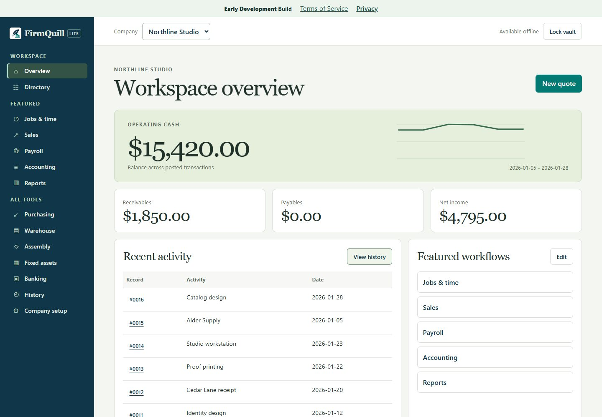
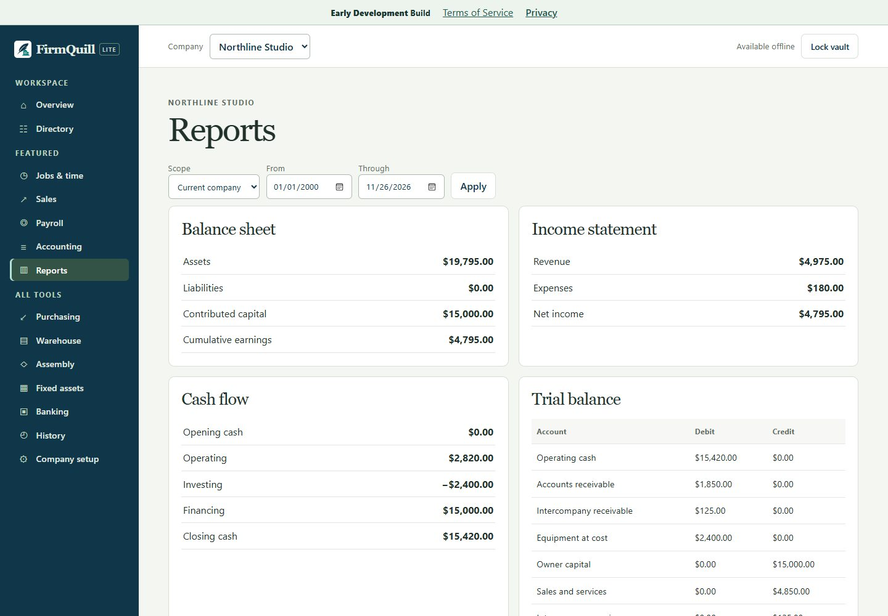
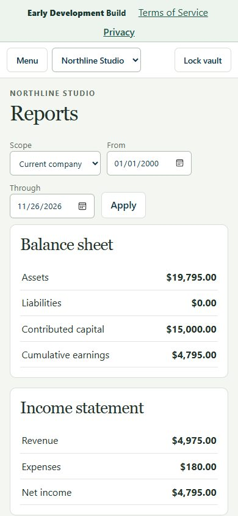

Business operations · Solo · Early Development
FirmQuill Lite
FirmQuill Lite is a free business operations suite for one person running a company. Manage your books, sales, inventory, time and job costs in one password-protected workspace, without setting up team accounts or running a server.

Feature screenshots
Captured from the working app in a local preview with fictional entries only. Phone images are labeled “iPhone viewport preview.” Select an image to view it at full size.






Data guide
Data & backups
- Where records live
- All companies share one password-encrypted vault in this browser’s IndexedDB storage on this device. The vault uses AES-256-GCM encryption and locks after five idle minutes. Clearing site data can erase the local copy.
- Make a backup
- Choose Download backup in Company setup to save a password-encrypted .firmquill file with every company, its settings, history and attachments. Keep the file and its password recoverable outside the browser.
- Restore your records
- Open Restore backup in a fresh profile and enter the backup password. To replace an existing vault, unlock it, save a current backup and confirm replacement in Company setup. The existing vault keeps its password.
What’s new in 0.4 development preview
These features are implemented and tested on the development branch. The live Lite app still runs the prior build.
- Projects and tasks
- Manage tasks, due dates, staffing plans, approved time and job costs in the same workspace. A staffing record does not create a user account.
- Contracts and renewals
- Save contract details, effective and renewal dates, and document references. Link a contract to a project and review edits in its history.
- Assets and pallets
- Track stock by unique asset or pallet ID, contents and location. Look up an ID by typing it or using a scanner that enters text. Compare a physical count with expected stock and review the difference before posting a correction.
Current Lite update First-party code is available under the MIT license; the official app’s Terms remain separate. The browser remembers your acceptance for the current agreement. If the agreement changes or the site’s stored data is cleared, the app can ask again. The solo, offline-capable workspace is unchanged.
About this preview Preview 0.1.0-preview.2 is intended for synthetic books. Commercial documents use one USD line with whole quantities. Payroll is limited to federal worksheets for synthetic testing.
Offline workspace
- Sample companies
- Try Northline Studio’s service jobs and Alder Supply’s product inventory, or create a company of your own with synthetic records.
- Offline access
- After the first complete online setup, the same browser can reopen the app and save changes offline. Use the same site address and browser profile to return to the same books.
- Move to Full Suite
- Download the encrypted vault and preview it in a fresh Full Suite installation. All companies travel together so links, attachments, reporting groups and approved time stay connected.
Company books
- Company setup
- Keep each business’s contacts, stock, balances and document numbers together. Choose activities such as selling products or billing for time, then pick the workflows featured on its overview.
- Cash overview
- See operating cash by posting date alongside amounts customers owe, unpaid vendor bills and net income. Open a recent activity to inspect the record behind it.
- Contacts and catalog
- Create reusable customer and vendor records, then add products or services to use on sales and purchasing documents.
Sales and purchasing
- From quote to collection
- Carry a single product or service line from quote to sales order, fulfillment and invoice. Record a full or partial payment and see the remaining balance by customer.
- From purchase order to payment
- Receive an order, enter the vendor bill and record payments against it. Open payables show which bills still need attention.
- Returns and credits
- Reverse a whole sale or purchase with a linked credit. Product returns adjust stock, and a settled amount can be recorded as a cash refund.
- Document history and attachments
- Open a record number to follow the originating transaction and its accounting entries. Print a sales or purchase document, attach a supporting file of up to 1 MB or download it again.
Stock, assembly and equipment
- Warehouse inventory
- Check quantity and moving-average carrying value for an item at each location. Transfer stock, record adjustments and trace each movement back to the event that caused it.
- Assembly
- Choose the components and quantities for a build. The app removes the components from stock and assigns their combined value to the finished goods.
- Fixed assets
- Record an equipment purchase with its useful life and residual value. Post monthly straight-line depreciation and follow the remaining book value in the asset register.
Jobs, time and payroll worksheets
- Job costing
- Link billed work and direct expenses to a job. Compare its revenue with posted costs and estimated approved labor to see the margin.
- Employees and time
- Record each employee’s hourly rate and work jurisdiction. Log minutes against a job, review the entry and approve it to include a straight-time labor estimate.
- Federal payroll preview
- Explore a 2026 worksheet using a pay date, wage bases, prior wages and W-4 elections. See estimated federal withholding, employee and employer Social Security and Medicare, and applicable Additional Medicare. Final payroll, pay stubs, direct deposits and filings are unavailable in this preview.
Accounting and banking
- Chart of accounts and journals
- Inspect the company’s account balances and the debit and credit entries behind them. Post balanced manual entries to eligible accounts and link a reversal to the original entry.
- Period close
- Set a closing date when a period is finished. The app blocks further posting through that date, so check outstanding entries before closing.
- Bank CSV import and export
- Exchange a single USD checking statement in the three-column layouts used by Wave US and QuickBooks Online US. Preview deposits, withdrawals, totals and repeat rows before confirming. These are file exchanges with no live bank or vendor connection.
- Statement reconciliation
- Match statement movements to cash journal entries one at a time by exact amount. Compare opening and closing balances and carry the reconciled close into the next statement.
Statements and reporting groups
- Four financial statements
- Choose a reporting period and read the balance sheet, income statement, cash flow and trial balance from dated postings.
- Group reporting
- Compare cash, assets and income across selected companies. Record paired intercompany service charges and inspect the group-only entries that eliminate qualifying unpaid charges from consolidated totals.